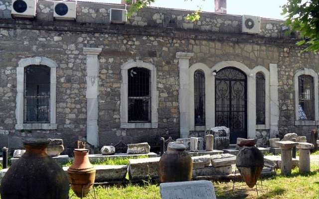
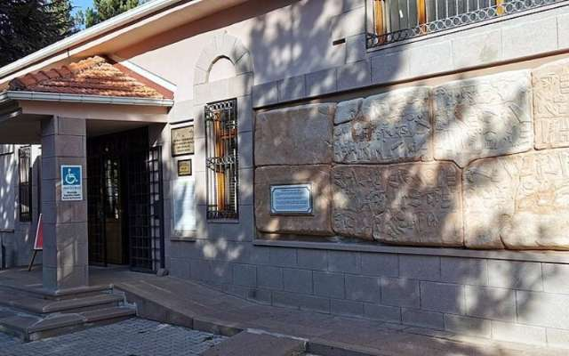
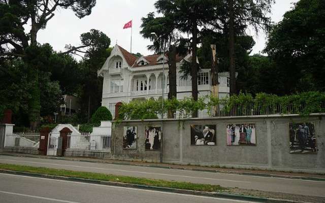
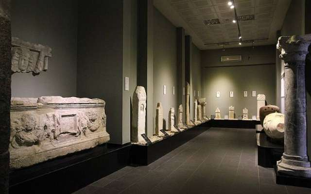
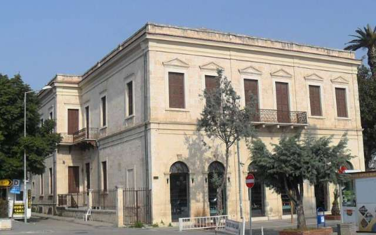
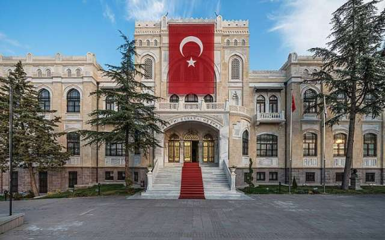
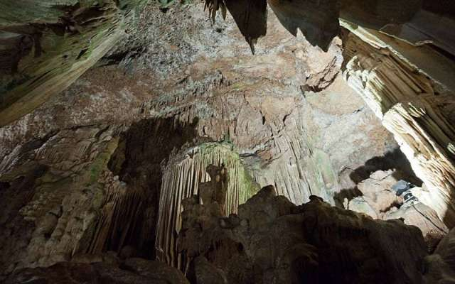
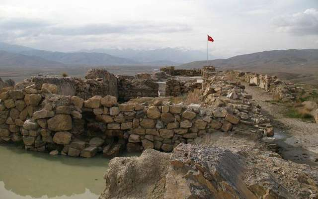

383 个地点
 阿佛洛狄西亚博物馆与遗址艾登 · 考古遗址
阿佛洛狄西亚博物馆与遗址艾登 · 考古遗址 阿尼遗址卡尔斯 · 考古遗址
阿尼遗址卡尔斯 · 考古遗址 阿尔斯兰泰佩遗址马拉蒂亚 · 考古遗址
阿尔斯兰泰佩遗址马拉蒂亚 · 考古遗址 帕加马卫城伊兹密尔 · 考古遗址
帕加马卫城伊兹密尔 · 考古遗址 帕加马阿斯克勒庇俄斯神殿遗址伊兹密尔 · 考古遗址
帕加马阿斯克勒庇俄斯神殿遗址伊兹密尔 · 考古遗址 贝尔加马红色巴西利卡伊兹密尔 · 考古遗址
贝尔加马红色巴西利卡伊兹密尔 · 考古遗址 代林库尤地下城内夫谢希尔 · 地下城
代林库尤地下城内夫谢希尔 · 地下城 以弗所伊兹密尔 · 考古遗址
以弗所伊兹密尔 · 考古遗址 埃尔纳扎尔教堂内夫谢希尔 · 宗教建筑
埃尔纳扎尔教堂内夫谢希尔 · 宗教建筑 戈尔迪翁博物馆安卡拉 · 博物馆
戈尔迪翁博物馆安卡拉 · 博物馆 哥贝克力石阵尚勒乌尔法 · 考古遗址
哥贝克力石阵尚勒乌尔法 · 考古遗址 格雷梅露天博物馆内夫谢希尔 · 考古遗址
格雷梅露天博物馆内夫谢希尔 · 考古遗址 哈图沙乔鲁姆 · 考古遗址
哈图沙乔鲁姆 · 考古遗址 希拉波利斯（棉花堡）遗址代尼兹利 · 考古遗址
希拉波利斯（棉花堡）遗址代尼兹利 · 考古遗址 黑暗教堂（格雷梅）内夫谢希尔 · 宗教建筑
黑暗教堂（格雷梅）内夫谢希尔 · 宗教建筑 凯马克勒地下城内夫谢希尔 · 地下城
凯马克勒地下城内夫谢希尔 · 地下城 内姆鲁特山阿德亚曼 · 考古遗址
内姆鲁特山阿德亚曼 · 考古遗址 特洛伊古城恰纳卡莱 · 考古遗址
特洛伊古城恰纳卡莱 · 考古遗址 克桑索斯遗址安塔利亚 · 考古遗址
克桑索斯遗址安塔利亚 · 考古遗址 泽尔维—帕沙巴拉遗址内夫谢希尔 · 考古遗址
泽尔维—帕沙巴拉遗址内夫谢希尔 · 考古遗址 恰塔霍裕克遗址科尼亚 · 考古遗址
恰塔霍裕克遗址科尼亚 · 考古遗址 恰武辛遗址（恰武辛教堂）内夫谢希尔 · 考古遗址
恰武辛遗址（恰武辛教堂）内夫谢希尔 · 考古遗址 “7·15”民主博物馆安卡拉 · 博物馆
“7·15”民主博物馆安卡拉 · 博物馆 亚当·密茨凯维奇博物馆伊斯坦布尔 · 博物馆
亚当·密茨凯维奇博物馆伊斯坦布尔 · 博物馆 阿达纳阿塔图尔克故居博物馆阿达纳 · 博物馆
阿达纳阿塔图尔克故居博物馆阿达纳 · 博物馆 阿达纳博物馆阿达纳 · 博物馆
阿达纳博物馆阿达纳 · 博物馆 阿德亚曼博物馆阿德亚曼 · 博物馆
阿德亚曼博物馆阿德亚曼 · 博物馆 阿菲永卡拉希萨尔博物馆阿菲永卡拉希萨尔 · 博物馆
阿菲永卡拉希萨尔博物馆阿菲永卡拉希萨尔 · 博物馆 士麦那古集市遗址伊兹密尔 · 考古遗址
士麦那古集市遗址伊兹密尔 · 考古遗址 阿赫拉特博物馆比特利斯 · 博物馆
阿赫拉特博物馆比特利斯 · 博物馆 阿赫拉特塞尔柱墓地比特利斯 · 考古遗址埃盖遗址马尼萨 · 考古遗址
阿赫拉特塞尔柱墓地比特利斯 · 考古遗址埃盖遗址马尼萨 · 考古遗址 艾扎诺伊遗址屈塔希亚 · 考古遗址阿克达马尔纪念博物馆凡城 · 博物馆阿克萨赖修道院谷阿克萨赖 · 考古遗址
艾扎诺伊遗址屈塔希亚 · 考古遗址阿克达马尔纪念博物馆凡城 · 博物馆阿克萨赖修道院谷阿克萨赖 · 考古遗址 阿克萨赖博物馆阿克萨赖 · 博物馆
阿克萨赖博物馆阿克萨赖 · 博物馆 阿克谢希尔纳斯尔丁·霍加考古与民族志博物馆科尼亚 · 博物馆阿克谢姆塞丁陵墓博卢 · 宗教建筑
阿克谢希尔纳斯尔丁·霍加考古与民族志博物馆科尼亚 · 博物馆阿克谢姆塞丁陵墓博卢 · 宗教建筑 阿拉班达遗址艾登 · 考古遗址
阿拉班达遗址艾登 · 考古遗址 阿拉贾霍裕克博物馆与遗址乔鲁姆 · 考古遗址阿拉丁·亚瓦什恰故居博物馆基利斯 · 博物馆
阿拉贾霍裕克博物馆与遗址乔鲁姆 · 考古遗址阿拉丁·亚瓦什恰故居博物馆基利斯 · 博物馆 阿拉罕修道院梅尔辛 · 宗教建筑阿兰亚阿塔图尔克故居博物馆安塔利亚 · 博物馆
阿拉罕修道院梅尔辛 · 宗教建筑阿兰亚阿塔图尔克故居博物馆安塔利亚 · 博物馆 阿兰亚城堡安塔利亚 · 城堡与历史建筑
阿兰亚城堡安塔利亚 · 城堡与历史建筑 阿兰亚博物馆安塔利亚 · 博物馆
阿兰亚博物馆安塔利亚 · 博物馆 阿拉谢希尔（非拉铁非）遗址马尼萨 · 考古遗址
阿拉谢希尔（非拉铁非）遗址马尼萨 · 考古遗址 亚历山大特洛阿斯遗址恰纳卡莱 · 考古遗址
亚历山大特洛阿斯遗址恰纳卡莱 · 考古遗址 阿林达遗址艾登 · 考古遗址
阿林达遗址艾登 · 考古遗址
阿马斯拉博物馆巴尔滕 · 博物馆 阿马西亚博物馆阿马西亚 · 博物馆
阿马西亚博物馆阿马西亚 · 博物馆 阿敏塔斯岩墓穆拉 · 考古遗址
阿敏塔斯岩墓穆拉 · 考古遗址 安纳托利亚文明博物馆安卡拉 · 博物馆阿纳穆尔博物馆梅尔辛 · 博物馆
安纳托利亚文明博物馆安卡拉 · 博物馆阿纳穆尔博物馆梅尔辛 · 博物馆 阿纳瓦尔扎遗址阿达纳 · 考古遗址
阿纳瓦尔扎遗址阿达纳 · 考古遗址 阿内穆里翁遗址梅尔辛 · 考古遗址
阿内穆里翁遗址梅尔辛 · 考古遗址 安塔利亚阿塔图尔克故居博物馆安塔利亚 · 博物馆
安塔利亚阿塔图尔克故居博物馆安塔利亚 · 博物馆 安塔利亚民族志博物馆安塔利亚 · 博物馆
安塔利亚民族志博物馆安塔利亚 · 博物馆 安塔利亚博物馆安塔利亚 · 博物馆安塔利亚墓葬博物馆安塔利亚 · 博物馆
安塔利亚博物馆安塔利亚 · 博物馆安塔利亚墓葬博物馆安塔利亚 · 博物馆 锡德拉古城安塔利亚 · 考古遗址
锡德拉古城安塔利亚 · 考古遗址 皮西迪亚的安条克遗址伊斯帕尔塔 · 考古遗址
皮西迪亚的安条克遗址伊斯帕尔塔 · 考古遗址 安提福尼提斯教堂吉尔内（凯里尼亚） · 宗教建筑
安提福尼提斯教堂吉尔内（凯里尼亚） · 宗教建筑 阿波罗斯明修斯神庙遗址恰纳卡莱 · 考古遗址
阿波罗斯明修斯神庙遗址恰纳卡莱 · 考古遗址 使徒安德烈修道院伊斯凯莱（特里科莫） · 宗教建筑
使徒安德烈修道院伊斯凯莱（特里科莫） · 宗教建筑 阿萨梅亚遗址阿德亚曼 · 考古遗址
阿萨梅亚遗址阿德亚曼 · 考古遗址 阿里坎达遗址安塔利亚 · 考古遗址
阿里坎达遗址安塔利亚 · 考古遗址 阿斯潘多斯安塔利亚 · 考古遗址
阿斯潘多斯安塔利亚 · 考古遗址 阿索斯遗址恰纳卡莱 · 考古遗址迪亚巴克尔阿塔图尔克故居博物馆迪亚巴克尔 · 博物馆乌沙克阿塔图尔克与民俗博物馆乌沙克 · 博物馆
阿索斯遗址恰纳卡莱 · 考古遗址迪亚巴克尔阿塔图尔克故居博物馆迪亚巴克尔 · 博物馆乌沙克阿塔图尔克与民俗博物馆乌沙克 · 博物馆 阿塔图尔克、雷迪夫与民族志博物馆科贾埃利 · 博物馆
阿塔图尔克、雷迪夫与民族志博物馆科贾埃利 · 博物馆 阿特拉斯 1948 伊斯坦布尔电影博物馆伊斯坦布尔 · 博物馆
阿特拉斯 1948 伊斯坦布尔电影博物馆伊斯坦布尔 · 博物馆 狩猎行宫博物馆科贾埃利 · 博物馆
狩猎行宫博物馆科贾埃利 · 博物馆 圣索菲亚历史与体验博物馆伊斯坦布尔 · 博物馆
圣索菲亚历史与体验博物馆伊斯坦布尔 · 博物馆 阿亚苏鲁克圣约翰大教堂遗址伊兹密尔 · 考古遗址
阿亚苏鲁克圣约翰大教堂遗址伊兹密尔 · 考古遗址 阿亚苏鲁克城堡伊兹密尔 · 城堡与历史建筑
阿亚苏鲁克城堡伊兹密尔 · 城堡与历史建筑 艾登考古博物馆艾登 · 博物馆圣三一巴西利卡伊斯凯莱（特里科莫） · 宗教建筑
艾登考古博物馆艾登 · 博物馆圣三一巴西利卡伊斯凯莱（特里科莫） · 宗教建筑 圣尼古拉斯纪念博物馆安塔利亚 · 博物馆圣墨丘利地下城阿克萨赖 · 地下城
圣尼古拉斯纪念博物馆安塔利亚 · 博物馆圣墨丘利地下城阿克萨赖 · 地下城 阿谢克·韦塞尔博物馆锡瓦斯 · 博物馆
阿谢克·韦塞尔博物馆锡瓦斯 · 博物馆 阿舍克勒土丘阿克萨赖 · 考古遗址巴夫拉博物馆萨姆松 · 博物馆
阿舍克勒土丘阿克萨赖 · 考古遗址巴夫拉博物馆萨姆松 · 博物馆 班德尔马博物馆巴勒克埃西尔 · 博物馆
班德尔马博物馆巴勒克埃西尔 · 博物馆 西线司令部博物馆科尼亚 · 博物馆
西线司令部博物馆科尼亚 · 博物馆 巴伊布尔特巴克瑟博物馆巴伊布尔特 · 博物馆
巴伊布尔特巴克瑟博物馆巴伊布尔特 · 博物馆 贝拉派斯修道院吉尔内（凯里尼亚） · 宗教建筑
贝拉派斯修道院吉尔内（凯里尼亚） · 宗教建筑 贝尔加马博物馆伊兹密尔 · 博物馆贝什科纳克拉尔民族志博物馆与马拉蒂亚传统民居马拉蒂亚 · 博物馆比莱吉克博物馆比莱吉克 · 博物馆
贝尔加马博物馆伊兹密尔 · 博物馆贝什科纳克拉尔民族志博物馆与马拉蒂亚传统民居马拉蒂亚 · 博物馆比莱吉克博物馆比莱吉克 · 博物馆 比尔吉查克尔阿阿宅邸伊兹密尔 · 博物馆比特利斯民族志博物馆比特利斯 · 博物馆
比尔吉查克尔阿阿宅邸伊兹密尔 · 博物馆比特利斯民族志博物馆比特利斯 · 博物馆 布劳恩多斯遗址乌沙克 · 考古遗址
布劳恩多斯遗址乌沙克 · 考古遗址 博德鲁姆古剧场穆拉 · 考古遗址博德鲁姆塞尔切港玻璃沉船展厅穆拉 · 博物馆
博德鲁姆古剧场穆拉 · 考古遗址博德鲁姆塞尔切港玻璃沉船展厅穆拉 · 博物馆 博德鲁姆水下考古博物馆穆拉 · 博物馆
博德鲁姆水下考古博物馆穆拉 · 博物馆 博卢博物馆博卢 · 博物馆
博卢博物馆博卢 · 博物馆
博阿兹柯伊博物馆乔鲁姆 · 博物馆 布法文托城堡吉尔内（凯里尼亚） · 城堡与历史建筑
布法文托城堡吉尔内（凯里尼亚） · 城堡与历史建筑 布尔杜尔博物馆布尔杜尔 · 博物馆
布尔杜尔博物馆布尔杜尔 · 博物馆 布尔萨考古博物馆布尔萨 · 博物馆
布尔萨考古博物馆布尔萨 · 博物馆
布尔萨阿塔图尔克故居博物馆布尔萨 · 博物馆 布尔萨土耳其伊斯兰艺术博物馆布尔萨 · 博物馆伊兹尼克湖中巴西利卡布尔萨 · 宗教建筑
布尔萨土耳其伊斯兰艺术博物馆布尔萨 · 博物馆伊兹尼克湖中巴西利卡布尔萨 · 宗教建筑 大客栈（比于克汗）莱夫科沙（尼科西亚） · 城堡与历史建筑
大客栈（比于克汗）莱夫科沙（尼科西亚） · 城堡与历史建筑 大皇宫马赛克博物馆伊斯坦布尔 · 博物馆
大皇宫马赛克博物馆伊斯坦布尔 · 博物馆 贾希特·瑟特克·塔兰哲故居民族志博物馆迪亚巴克尔 · 博物馆地狱之口洞穴宗古尔达克 · 自然景观
贾希特·瑟特克·塔兰哲故居民族志博物馆迪亚巴克尔 · 博物馆地狱之口洞穴宗古尔达克 · 自然景观 共和国博物馆安卡拉 · 博物馆
共和国博物馆安卡拉 · 博物馆 达拉遗址马尔丁 · 考古遗址
达拉遗址马尔丁 · 考古遗址 代尼兹利阿塔图尔克与民族志博物馆代尼兹利 · 博物馆
代尼兹利阿塔图尔克与民族志博物馆代尼兹利 · 博物馆 代尼兹利城市博物馆代尼兹利 · 博物馆
代尼兹利城市博物馆代尼兹利 · 博物馆 特里波利斯遗址代尼兹利 · 考古遗址
特里波利斯遗址代尼兹利 · 考古遗址 德尔维什帕夏宅邸莱夫科沙（尼科西亚） · 博物馆
德尔维什帕夏宅邸莱夫科沙（尼科西亚） · 博物馆 迪迪姆阿波罗神庙艾登 · 考古遗址
迪迪姆阿波罗神庙艾登 · 考古遗址 迪亚巴克尔考古博物馆迪亚巴克尔 · 博物馆自然历史博物馆布尔杜尔 · 博物馆埃迪尔内希德尔勒克炮台巴尔干历史博物馆埃迪尔内 · 博物馆
迪亚巴克尔考古博物馆迪亚巴克尔 · 博物馆自然历史博物馆布尔杜尔 · 博物馆埃迪尔内希德尔勒克炮台巴尔干历史博物馆埃迪尔内 · 博物馆 埃迪尔内马其顿塔埃迪尔内 · 城堡与历史建筑
埃迪尔内马其顿塔埃迪尔内 · 城堡与历史建筑 埃迪尔内博物馆埃迪尔内 · 博物馆以弗所体验博物馆伊兹密尔 · 博物馆
埃迪尔内博物馆埃迪尔内 · 博物馆以弗所体验博物馆伊兹密尔 · 博物馆 以弗所博物馆伊兹密尔 · 博物馆
以弗所博物馆伊兹密尔 · 博物馆 以弗所山坡住宅伊兹密尔 · 考古遗址埃拉泽博物馆埃拉泽 · 博物馆埃尔比斯坦城市博物馆卡赫拉曼马拉什 · 博物馆埃尔马勒博物馆安塔利亚 · 博物馆
以弗所山坡住宅伊兹密尔 · 考古遗址埃拉泽博物馆埃拉泽 · 博物馆埃尔比斯坦城市博物馆卡赫拉曼马拉什 · 博物馆埃尔马勒博物馆安塔利亚 · 博物馆 恩科米（阿拉西亚）遗址加齐马古萨（法马古斯塔） · 考古遗址埃雷利博物馆科尼亚 · 博物馆埃尔梅内克艾哈迈德·凯莱绍卢考古与民族志博物馆卡拉曼 · 博物馆
恩科米（阿拉西亚）遗址加齐马古萨（法马古斯塔） · 考古遗址埃雷利博物馆科尼亚 · 博物馆埃尔梅内克艾哈迈德·凯莱绍卢考古与民族志博物馆卡拉曼 · 博物馆 埃尔津詹博物馆埃尔津詹 · 博物馆
埃尔津詹博物馆埃尔津詹 · 博物馆 埃尔祖鲁姆阿塔图尔克故居博物馆埃尔祖鲁姆 · 博物馆
埃尔祖鲁姆阿塔图尔克故居博物馆埃尔祖鲁姆 · 博物馆 埃尔祖鲁姆城堡埃尔祖鲁姆 · 城堡与历史建筑
埃尔祖鲁姆城堡埃尔祖鲁姆 · 城堡与历史建筑 埃尔祖鲁姆博物馆埃尔祖鲁姆 · 博物馆埃尔祖鲁姆绘画与雕塑博物馆埃尔祖鲁姆 · 博物馆
埃尔祖鲁姆博物馆埃尔祖鲁姆 · 博物馆埃尔祖鲁姆绘画与雕塑博物馆埃尔祖鲁姆 · 博物馆 埃蒂考古博物馆埃斯基谢希尔 · 博物馆
埃蒂考古博物馆埃斯基谢希尔 · 博物馆 民族志博物馆安卡拉 · 博物馆
民族志博物馆安卡拉 · 博物馆 费特希耶盖米莱尔岛穆拉 · 考古遗址
费特希耶盖米莱尔岛穆拉 · 考古遗址 费特希耶卡亚柯伊遗址穆拉 · 考古遗址
费特希耶卡亚柯伊遗址穆拉 · 考古遗址 费特希耶莱顿遗址穆拉 · 考古遗址
费特希耶莱顿遗址穆拉 · 考古遗址 费特希耶博物馆伊斯坦布尔 · 博物馆费特希耶博物馆穆拉 · 博物馆
费特希耶博物馆伊斯坦布尔 · 博物馆费特希耶博物馆穆拉 · 博物馆 费特希耶皮纳拉遗址穆拉 · 考古遗址
费特希耶皮纳拉遗址穆拉 · 考古遗址 费特希耶特洛斯遗址穆拉 · 考古遗址菲利奥斯（提奥斯）遗址宗古尔达克 · 考古遗址
费特希耶特洛斯遗址穆拉 · 考古遗址菲利奥斯（提奥斯）遗址宗古尔达克 · 考古遗址 加拉塔梅夫拉维修道院博物馆伊斯坦布尔 · 博物馆
加拉塔梅夫拉维修道院博物馆伊斯坦布尔 · 博物馆 加齐博物馆萨姆松 · 博物馆
加齐博物馆萨姆松 · 博物馆 加济安泰普考古博物馆加济安泰普 · 博物馆
加济安泰普考古博物馆加济安泰普 · 博物馆 加济安泰普城堡加济安泰普 · 城堡与历史建筑日耳曼尼西亚马赛克区卡赫拉曼马拉什 · 考古遗址吉雷松博物馆吉雷松 · 博物馆
加济安泰普城堡加济安泰普 · 城堡与历史建筑日耳曼尼西亚马赛克区卡赫拉曼马拉什 · 考古遗址吉雷松博物馆吉雷松 · 博物馆 凯里尼亚城堡与沉船博物馆吉尔内（凯里尼亚） · 城堡与历史建筑
凯里尼亚城堡与沉船博物馆吉尔内（凯里尼亚） · 城堡与历史建筑 凯里尼亚圣像博物馆吉尔内（凯里尼亚） · 博物馆
凯里尼亚圣像博物馆吉尔内（凯里尼亚） · 博物馆 格兹内城堡梅尔辛 · 城堡与历史建筑
格兹内城堡梅尔辛 · 城堡与历史建筑 居尔谢希尔圣约翰教堂内夫谢希尔 · 宗教建筑居米什哈内博物馆居米什哈内 · 博物馆
居尔谢希尔圣约翰教堂内夫谢希尔 · 宗教建筑居米什哈内博物馆居米什哈内 · 博物馆 居米什莱尔修道院与地下城尼代 · 地下城
居米什莱尔修道院与地下城尼代 · 地下城 居普居普奥卢宅邸民族志博物馆开塞利 · 博物馆
居普居普奥卢宅邸民族志博物馆开塞利 · 博物馆 居泽尔尤尔特考古与自然历史博物馆居泽尔尤尔特（莫尔富） · 博物馆
居泽尔尤尔特考古与自然历史博物馆居泽尔尤尔特（莫尔富） · 博物馆 哈哲贝克塔什博物馆内夫谢希尔 · 博物馆哈德良波利斯遗址卡拉比克 · 考古遗址
哈哲贝克塔什博物馆内夫谢希尔 · 博物馆哈德良波利斯遗址卡拉比克 · 考古遗址 “7·15”记忆博物馆伊斯坦布尔 · 博物馆
“7·15”记忆博物馆伊斯坦布尔 · 博物馆 哈莱普利巴赫切马赛克博物馆尚勒乌尔法 · 博物馆哈米迪耶炮台与恰纳卡莱战役历史博物馆恰纳卡莱 · 博物馆
哈莱普利巴赫切马赛克博物馆尚勒乌尔法 · 博物馆哈米迪耶炮台与恰纳卡莱战役历史博物馆恰纳卡莱 · 博物馆 哈尔普特城堡埃拉泽 · 城堡与历史建筑
哈尔普特城堡埃拉泽 · 城堡与历史建筑 哈兰遗址尚勒乌尔法 · 考古遗址
哈兰遗址尚勒乌尔法 · 考古遗址 哈桑凯伊夫博物馆与遗址巴特曼 · 考古遗址
哈桑凯伊夫博物馆与遗址巴特曼 · 考古遗址 哈塔伊考古博物馆哈塔伊 · 博物馆哈塔伊内吉米·阿斯富罗卢考古博物馆哈塔伊 · 博物馆
哈塔伊考古博物馆哈塔伊 · 博物馆哈塔伊内吉米·阿斯富罗卢考古博物馆哈塔伊 · 博物馆 哈泽兰拉尔宅邸阿马西亚 · 博物馆
哈泽兰拉尔宅邸阿马西亚 · 博物馆 希拉波利斯（棉花堡）考古博物馆代尼兹利 · 博物馆
希拉波利斯（棉花堡）考古博物馆代尼兹利 · 博物馆 霍沙普城堡凡城 · 城堡与历史建筑
霍沙普城堡凡城 · 城堡与历史建筑 亚索斯遗址穆拉 · 考古遗址
亚索斯遗址穆拉 · 考古遗址 厄赫拉热峡谷阿克萨赖 · 考古遗址
厄赫拉热峡谷阿克萨赖 · 考古遗址 伊斯帕尔塔博物馆伊斯帕尔塔 · 博物馆卡德城堡遗址艾登 · 考古遗址卡赫拉曼卡赞“7·15”烈士与民主博物馆安卡拉 · 博物馆
伊斯帕尔塔博物馆伊斯帕尔塔 · 博物馆卡德城堡遗址艾登 · 考古遗址卡赫拉曼卡赞“7·15”烈士与民主博物馆安卡拉 · 博物馆
卡赫拉曼马拉什博物馆卡赫拉曼马拉什 · 博物馆 卡赫塔新堡遗址阿德亚曼 · 考古遗址
卡赫塔新堡遗址阿德亚曼 · 考古遗址 卡曼卡莱霍裕克考古博物馆克尔谢希尔 · 考古遗址
卡曼卡莱霍裕克考古博物馆克尔谢希尔 · 考古遗址 坎勒迪瓦内遗址梅尔辛 · 考古遗址
坎勒迪瓦内遗址梅尔辛 · 考古遗址 坎塔拉城堡伊斯凯莱（特里科莫） · 城堡与历史建筑番红花城博物馆卡拉比克 · 博物馆
坎塔拉城堡伊斯凯莱（特里科莫） · 城堡与历史建筑番红花城博物馆卡拉比克 · 博物馆 卡拉贾苏民族志博物馆艾登 · 博物馆
卡拉贾苏民族志博物馆艾登 · 博物馆 黑海埃雷利博物馆宗古尔达克 · 博物馆
黑海埃雷利博物馆宗古尔达克 · 博物馆 卡拉汗泰佩遗址尚勒乌尔法 · 考古遗址
卡拉汗泰佩遗址尚勒乌尔法 · 考古遗址 卡拉因洞穴安塔利亚 · 自然景观
卡拉因洞穴安塔利亚 · 自然景观 卡拉曼博物馆卡拉曼 · 博物馆
卡拉曼博物馆卡拉曼 · 博物馆 卡拉塔伊博物馆（瓷砖博物馆）科尼亚 · 博物馆
卡拉塔伊博物馆（瓷砖博物馆）科尼亚 · 博物馆 卡拉泰佩—阿斯兰塔什博物馆与遗址奥斯曼尼耶 · 考古遗址
卡拉泰佩—阿斯兰塔什博物馆与遗址奥斯曼尼耶 · 考古遗址 卡尔斯高加索战线战争史博物馆卡尔斯 · 博物馆
卡尔斯高加索战线战争史博物馆卡尔斯 · 博物馆 卡尔斯博物馆卡尔斯 · 博物馆
卡尔斯博物馆卡尔斯 · 博物馆 卡斯塔巴拉遗址奥斯曼尼耶 · 考古遗址卡斯塔莫努博物馆卡斯塔莫努 · 博物馆
卡斯塔巴拉遗址奥斯曼尼耶 · 考古遗址卡斯塔莫努博物馆卡斯塔莫努 · 博物馆 考诺斯遗址穆拉 · 考古遗址
考诺斯遗址穆拉 · 考古遗址 开塞利考古博物馆开塞利 · 博物馆
开塞利考古博物馆开塞利 · 博物馆 开塞利阿塔图尔克故居博物馆开塞利 · 博物馆
开塞利阿塔图尔克故居博物馆开塞利 · 博物馆 凯斯金苏鲁洞穴地下城克勒克卡莱 · 地下城
凯斯金苏鲁洞穴地下城克勒克卡莱 · 地下城 基比拉遗址布尔杜尔 · 考古遗址基利斯博物馆基利斯 · 博物馆
基比拉遗址布尔杜尔 · 考古遗址基利斯博物馆基利斯 · 博物馆 基利特巴希尔城堡博物馆恰纳卡莱 · 博物馆
基利特巴希尔城堡博物馆恰纳卡莱 · 博物馆 克拉罗斯遗址伊兹密尔 · 考古遗址克拉佐美奈遗址伊兹密尔 · 考古遗址科贾埃利考古博物馆科贾埃利 · 博物馆
克拉罗斯遗址伊兹密尔 · 考古遗址克拉佐美奈遗址伊兹密尔 · 考古遗址科贾埃利考古博物馆科贾埃利 · 博物馆 科努拉尔普博物馆迪兹杰 · 博物馆
科努拉尔普博物馆迪兹杰 · 博物馆 科尼亚考古博物馆科尼亚 · 博物馆
科尼亚考古博物馆科尼亚 · 博物馆 科尼亚阿塔图尔克故居博物馆科尼亚 · 博物馆科尼亚民族志博物馆科尼亚 · 博物馆
科尼亚阿塔图尔克故居博物馆科尼亚 · 博物馆科尼亚民族志博物馆科尼亚 · 博物馆 科苏特故居博物馆屈塔希亚 · 博物馆王陵博物馆与遗址加齐马古萨（法马古斯塔） · 考古遗址独立战争博物馆安卡拉 · 博物馆
科苏特故居博物馆屈塔希亚 · 博物馆王陵博物馆与遗址加齐马古萨（法马古斯塔） · 考古遗址独立战争博物馆安卡拉 · 博物馆 库鲁柯普吕纪念博物馆与阿达纳传统民居阿达纳 · 博物馆
库鲁柯普吕纪念博物馆与阿达纳传统民居阿达纳 · 博物馆 国民军博物馆巴勒克埃西尔 · 博物馆
国民军博物馆巴勒克埃西尔 · 博物馆 屈尔泰佩遗址开塞利 · 考古遗址屈塔希亚博物馆屈塔希亚 · 博物馆小艾瓦瑟尔圣安娜教堂特拉布宗 · 宗教建筑克尔克拉雷利博物馆克尔克拉雷利 · 博物馆克尔谢希尔博物馆克尔谢希尔 · 博物馆
屈尔泰佩遗址开塞利 · 考古遗址屈塔希亚博物馆屈塔希亚 · 博物馆小艾瓦瑟尔圣安娜教堂特拉布宗 · 宗教建筑克尔克拉雷利博物馆克尔克拉雷利 · 博物馆克尔谢希尔博物馆克尔谢希尔 · 博物馆 少女塔伊斯坦布尔 · 城堡与历史建筑
少女塔伊斯坦布尔 · 城堡与历史建筑 拉布劳恩达遗址穆拉 · 考古遗址
拉布劳恩达遗址穆拉 · 考古遗址 拉吉纳遗址穆拉 · 考古遗址
拉吉纳遗址穆拉 · 考古遗址 拉拉·穆斯塔法帕夏清真寺加齐马古萨（法马古斯塔） · 宗教建筑
拉拉·穆斯塔法帕夏清真寺加齐马古萨（法马古斯塔） · 宗教建筑 劳迪西亚遗址代尼兹利 · 考古遗址
劳迪西亚遗址代尼兹利 · 考古遗址 石刻博物馆莱夫科沙（尼科西亚） · 博物馆拉蒂夫奥卢宅邸托卡特 · 博物馆
石刻博物馆莱夫科沙（尼科西亚） · 博物馆拉蒂夫奥卢宅邸托卡特 · 博物馆 吕基亚文明博物馆与安德里亚卡遗址安塔利亚 · 考古遗址
吕基亚文明博物馆与安德里亚卡遗址安塔利亚 · 考古遗址 利米拉遗址安塔利亚 · 考古遗址利瓦帕夏宅邸民族志博物馆卡斯塔莫努 · 博物馆矿业博物馆宗古尔达克 · 博物馆
利米拉遗址安塔利亚 · 考古遗址利瓦帕夏宅邸民族志博物馆卡斯塔莫努 · 博物馆矿业博物馆宗古尔达克 · 博物馆 马格尼西亚遗址艾登 · 考古遗址马拉蒂亚阿塔图尔克纪念馆与民族志博物馆马拉蒂亚 · 博物馆
马格尼西亚遗址艾登 · 考古遗址马拉蒂亚阿塔图尔克纪念馆与民族志博物馆马拉蒂亚 · 博物馆 马拉蒂亚博物馆马拉蒂亚 · 博物馆马拉兹吉尔特博物馆穆什 · 博物馆
马拉蒂亚博物馆马拉蒂亚 · 博物馆马拉兹吉尔特博物馆穆什 · 博物馆 马穆雷城堡梅尔辛 · 城堡与历史建筑
马穆雷城堡梅尔辛 · 城堡与历史建筑 马尼萨阿克希萨尔博物馆与泰佩墓地马尼萨 · 考古遗址
马尼萨阿克希萨尔博物馆与泰佩墓地马尼萨 · 考古遗址 马尼萨博物馆马尼萨 · 博物馆
马尼萨博物馆马尼萨 · 博物馆 马尔丁博物馆马尔丁 · 博物馆马尔马里斯博物馆穆拉 · 博物馆马泽地下城内夫谢希尔 · 地下城
马尔丁博物馆马尔丁 · 博物馆马尔马里斯博物馆穆拉 · 博物馆马泽地下城内夫谢希尔 · 地下城 穆罕默德·阿基夫·埃尔索伊纪念馆伊斯坦布尔 · 博物馆穆罕默德·贾比尔·阿尔佩尔考古博物馆巴特曼 · 博物馆
穆罕默德·阿基夫·埃尔索伊纪念馆伊斯坦布尔 · 博物馆穆罕默德·贾比尔·阿尔佩尔考古博物馆巴特曼 · 博物馆
梅尔辛阿塔图尔克故居博物馆梅尔辛 · 博物馆 梅尔辛少女城堡（克兹卡莱西）梅尔辛 · 城堡与历史建筑梅尔辛博物馆梅尔辛 · 博物馆梅尔辛塔尔苏斯博物馆梅尔辛 · 博物馆
梅尔辛少女城堡（克兹卡莱西）梅尔辛 · 城堡与历史建筑梅尔辛博物馆梅尔辛 · 博物馆梅尔辛塔尔苏斯博物馆梅尔辛 · 博物馆 圣母玛利亚修道院吉雷松 · 宗教建筑
圣母玛利亚修道院吉雷松 · 宗教建筑 梅特罗波利斯遗址伊兹密尔 · 考古遗址
梅特罗波利斯遗址伊兹密尔 · 考古遗址 梅夫拉纳博物馆科尼亚 · 博物馆
梅夫拉纳博物馆科尼亚 · 博物馆 梅夫拉维道堂博物馆莱夫科沙（尼科西亚） · 博物馆梅夫拉维修道院博物馆安塔利亚 · 博物馆
梅夫拉维道堂博物馆莱夫科沙（尼科西亚） · 博物馆梅夫拉维修道院博物馆安塔利亚 · 博物馆 迈达斯城（亚兹勒卡亚）遗址埃斯基谢希尔 · 考古遗址
迈达斯城（亚兹勒卡亚）遗址埃斯基谢希尔 · 考古遗址 米拉斯贝钦城堡与遗址穆拉 · 考古遗址
米拉斯贝钦城堡与遗址穆拉 · 考古遗址 米拉斯欧罗莫斯遗址穆拉 · 考古遗址米拉斯石刻博物馆穆拉 · 博物馆
米拉斯欧罗莫斯遗址穆拉 · 考古遗址米拉斯石刻博物馆穆拉 · 博物馆 米拉斯乌尊尤瓦纪念墓与博物馆综合体穆拉 · 考古遗址米拉斯亚索斯鱼市博物馆穆拉 · 博物馆
米拉斯乌尊尤瓦纪念墓与博物馆综合体穆拉 · 考古遗址米拉斯亚索斯鱼市博物馆穆拉 · 博物馆 米利都博物馆艾登 · 博物馆
米利都博物馆艾登 · 博物馆 米利都遗址艾登 · 考古遗址穆朱尔地下城克尔谢希尔 · 地下城
米利都遗址艾登 · 考古遗址穆朱尔地下城克尔谢希尔 · 地下城 穆达尼亚停战协定纪念馆布尔萨 · 博物馆
穆达尼亚停战协定纪念馆布尔萨 · 博物馆 博德鲁姆摩索拉斯陵墓纪念博物馆穆拉 · 博物馆
博德鲁姆摩索拉斯陵墓纪念博物馆穆拉 · 博物馆 尼多斯遗址穆拉 · 考古遗址
尼多斯遗址穆拉 · 考古遗址 穆拉博物馆穆拉 · 博物馆穆什博物馆穆什 · 博物馆
穆拉博物馆穆拉 · 博物馆穆什博物馆穆什 · 博物馆 米拉遗址安塔利亚 · 考古遗址
米拉遗址安塔利亚 · 考古遗址 纳马兹加赫炮台博物馆恰纳卡莱 · 博物馆
纳马兹加赫炮台博物馆恰纳卡莱 · 博物馆 纳默克·凯末尔地牢与博物馆加齐马古萨（法马古斯塔） · 博物馆
纳默克·凯末尔地牢与博物馆加齐马古萨（法马古斯塔） · 博物馆 内吉米·伊厄故居民族志博物馆埃迪尔内 · 博物馆哈哲贝克塔什考古与民俗博物馆内夫谢希尔 · 博物馆哈哲贝克塔什阿塔图尔克故居博物馆内夫谢希尔 · 博物馆
内吉米·伊厄故居民族志博物馆埃迪尔内 · 博物馆哈哲贝克塔什考古与民俗博物馆内夫谢希尔 · 博物馆哈哲贝克塔什阿塔图尔克故居博物馆内夫谢希尔 · 博物馆 内夫谢希尔博物馆内夫谢希尔 · 博物馆尼吕费尔哈吞慈善厨房（土耳其伊斯兰艺术博物馆）布尔萨 · 博物馆尼代安达瓦尔遗址尼代 · 考古遗址尼代博物馆尼代 · 博物馆
内夫谢希尔博物馆内夫谢希尔 · 博物馆尼吕费尔哈吞慈善厨房（土耳其伊斯兰艺术博物馆）布尔萨 · 博物馆尼代安达瓦尔遗址尼代 · 考古遗址尼代博物馆尼代 · 博物馆 尼萨遗址（苏丹希萨尔）艾登 · 考古遗址
尼萨遗址（苏丹希萨尔）艾登 · 考古遗址 奥林波斯遗址安塔利亚 · 考古遗址奥尔杜博物馆奥尔杜 · 博物馆
奥林波斯遗址安塔利亚 · 考古遗址奥尔杜博物馆奥尔杜 · 博物馆 奥斯曼·哈姆迪贝伊博物馆科贾埃利 · 博物馆奥斯曼尼耶博物馆奥斯曼尼耶 · 博物馆奥斯曼民居博物馆布尔萨 · 博物馆
奥斯曼·哈姆迪贝伊博物馆科贾埃利 · 博物馆奥斯曼尼耶博物馆奥斯曼尼耶 · 博物馆奥斯曼民居博物馆布尔萨 · 博物馆 奥赛罗城堡加齐马古萨（法马古斯塔） · 城堡与历史建筑
奥赛罗城堡加齐马古萨（法马古斯塔） · 城堡与历史建筑 帕塔拉遗址安塔利亚 · 考古遗址
帕塔拉遗址安塔利亚 · 考古遗址 佩尔吉遗址安塔利亚 · 考古遗址
佩尔吉遗址安塔利亚 · 考古遗址 佩雷遗址阿德亚曼 · 考古遗址
佩雷遗址阿德亚曼 · 考古遗址 佩西努斯遗址埃斯基谢希尔 · 考古遗址
佩西努斯遗址埃斯基谢希尔 · 考古遗址 法塞利斯遗址安塔利亚 · 考古遗址
法塞利斯遗址安塔利亚 · 考古遗址 普里埃内遗址艾登 · 考古遗址
普里埃内遗址艾登 · 考古遗址
绘画与雕塑博物馆安卡拉 · 博物馆 里泽阿塔图尔克故居博物馆里泽 · 博物馆里泽博物馆里泽 · 博物馆
里泽阿塔图尔克故居博物馆里泽 · 博物馆里泽博物馆里泽 · 博物馆 罗马浴场遗址安卡拉 · 考古遗址
罗马浴场遗址安卡拉 · 考古遗址 鲁梅利堡垒伊斯坦布尔 · 城堡与历史建筑
鲁梅利堡垒伊斯坦布尔 · 城堡与历史建筑 鲁姆卡莱遗址加济安泰普 · 考古遗址
鲁姆卡莱遗址加济安泰普 · 考古遗址 萨加拉索斯遗址布尔杜尔 · 考古遗址
萨加拉索斯遗址布尔杜尔 · 考古遗址 萨卡里亚博物馆萨卡里亚 · 博物馆
萨卡里亚博物馆萨卡里亚 · 博物馆 萨拉米斯遗址加齐马古萨（法马古斯塔） · 考古遗址
萨拉米斯遗址加齐马古萨（法马古斯塔） · 考古遗址 萨姆松博物馆萨姆松 · 博物馆
萨姆松博物馆萨姆松 · 博物馆 萨拉特勒“四十眼”地下城阿克萨赖 · 地下城
萨拉特勒“四十眼”地下城阿克萨赖 · 地下城 萨第斯遗址马尼萨 · 考古遗址
萨第斯遗址马尼萨 · 考古遗址 萨勒卡亚罗马浴场约兹加特 · 考古遗址
萨勒卡亚罗马浴场约兹加特 · 考古遗址 塞迪尔岛遗址穆拉 · 考古遗址
塞迪尔岛遗址穆拉 · 考古遗址 塞利米耶清真寺莱夫科沙（尼科西亚） · 宗教建筑
塞利米耶清真寺莱夫科沙（尼科西亚） · 宗教建筑 锡德博物馆安塔利亚 · 博物馆
锡德博物馆安塔利亚 · 博物馆 锡德遗址安塔利亚 · 考古遗址
锡德遗址安塔利亚 · 考古遗址
锡利夫凯阿斯特姆洞梅尔辛 · 自然景观 锡利夫凯阿塔图尔克故居与民族志博物馆梅尔辛 · 博物馆
锡利夫凯阿塔图尔克故居与民族志博物馆梅尔辛 · 博物馆 锡利夫凯圣特克拉遗址梅尔辛 · 考古遗址
锡利夫凯圣特克拉遗址梅尔辛 · 考古遗址 锡利夫凯天堂与地狱天坑梅尔辛 · 自然景观
锡利夫凯天堂与地狱天坑梅尔辛 · 自然景观 锡利夫凯博物馆梅尔辛 · 博物馆
锡利夫凯博物馆梅尔辛 · 博物馆 锡利夫凯纳尔勒库尤马赛克博物馆梅尔辛 · 博物馆锡尔万阿塔图尔克故居博物馆迪亚巴克尔 · 博物馆
锡利夫凯纳尔勒库尤马赛克博物馆梅尔辛 · 博物馆锡尔万阿塔图尔克故居博物馆迪亚巴克尔 · 博物馆 西美纳遗址安塔利亚 · 考古遗址锡诺普阿尔斯兰托伦拉尔民俗博物馆锡诺普 · 博物馆锡诺普博物馆锡诺普 · 博物馆
西美纳遗址安塔利亚 · 考古遗址锡诺普阿尔斯兰托伦拉尔民俗博物馆锡诺普 · 博物馆锡诺普博物馆锡诺普 · 博物馆 锡瓦斯考古博物馆锡瓦斯 · 博物馆
锡瓦斯考古博物馆锡瓦斯 · 博物馆 锡瓦斯阿塔图尔克与大会博物馆锡瓦斯 · 博物馆索贝索斯遗址内夫谢希尔 · 考古遗址索夫拉兹纪念墓阿德亚曼 · 考古遗址
锡瓦斯阿塔图尔克与大会博物馆锡瓦斯 · 博物馆索贝索斯遗址内夫谢希尔 · 考古遗址索夫拉兹纪念墓阿德亚曼 · 考古遗址 索利遗址莱夫凯（莱夫卡） · 考古遗址
索利遗址莱夫凯（莱夫卡） · 考古遗址 圣巴拿巴修道院加齐马古萨（法马古斯塔） · 宗教建筑
圣巴拿巴修道院加齐马古萨（法马古斯塔） · 宗教建筑 圣伊拉里翁城堡吉尔内（凯里尼亚） · 城堡与历史建筑
圣伊拉里翁城堡吉尔内（凯里尼亚） · 城堡与历史建筑 圣彼得纪念博物馆哈塔伊 · 博物馆
圣彼得纪念博物馆哈塔伊 · 博物馆 圣西蒙修道院哈塔伊 · 宗教建筑
圣西蒙修道院哈塔伊 · 宗教建筑 斯特拉托尼凯亚遗址穆拉 · 考古遗址
斯特拉托尼凯亚遗址穆拉 · 考古遗址 瑟于特埃尔图鲁尔加齐博物馆比莱吉克 · 博物馆
瑟于特埃尔图鲁尔加齐博物馆比莱吉克 · 博物馆 苏美拉修道院特拉布宗 · 宗教建筑塔克西亚尔希斯纪念博物馆巴勒克埃西尔 · 博物馆
苏美拉修道院特拉布宗 · 宗教建筑塔克西亚尔希斯纪念博物馆巴勒克埃西尔 · 博物馆 锡诺普历史监狱锡诺普 · 城堡与历史建筑
锡诺普历史监狱锡诺普 · 城堡与历史建筑 塔尔苏斯圣保罗纪念博物馆梅尔辛 · 博物馆
塔尔苏斯圣保罗纪念博物馆梅尔辛 · 博物馆 塔尔苏斯圣保罗井梅尔辛 · 宗教建筑
塔尔苏斯圣保罗井梅尔辛 · 宗教建筑 塔特拉林地下城内夫谢希尔 · 地下城泰基尔达穆拉特勒阿塔图尔克故居博物馆泰基尔达 · 博物馆泰基尔达博物馆泰基尔达 · 博物馆
塔特拉林地下城内夫谢希尔 · 地下城泰基尔达穆拉特勒阿塔图尔克故居博物馆泰基尔达 · 博物馆泰基尔达博物馆泰基尔达 · 博物馆 特奥斯遗址伊兹密尔 · 考古遗址
特奥斯遗址伊兹密尔 · 考古遗址 特尔梅索斯遗址安塔利亚 · 考古遗址蒂雷博物馆伊兹密尔 · 博物馆托卡特阿塔图尔克故居与民俗博物馆托卡特 · 博物馆
特尔梅索斯遗址安塔利亚 · 考古遗址蒂雷博物馆伊兹密尔 · 博物馆托卡特阿塔图尔克故居与民俗博物馆托卡特 · 博物馆 托卡特博物馆托卡特 · 博物馆
托卡特博物馆托卡特 · 博物馆 特拉布宗博物馆（科斯塔基宅邸）特拉布宗 · 博物馆
特拉布宗博物馆（科斯塔基宅邸）特拉布宗 · 博物馆 特洛伊博物馆恰纳卡莱 · 博物馆
特洛伊博物馆恰纳卡莱 · 博物馆 通杰利博物馆通杰利 · 博物馆
通杰利博物馆通杰利 · 博物馆 土耳其伊斯兰艺术博物馆伊斯坦布尔 · 博物馆埃迪尔内土耳其伊斯兰艺术博物馆埃迪尔内 · 博物馆
土耳其伊斯兰艺术博物馆伊斯坦布尔 · 博物馆埃迪尔内土耳其伊斯兰艺术博物馆埃迪尔内 · 博物馆 土耳其伊斯兰艺术与民族志博物馆埃尔祖鲁姆 · 博物馆乌卢博尔卢博物馆伊斯帕尔塔 · 博物馆
土耳其伊斯兰艺术与民族志博物馆埃尔祖鲁姆 · 博物馆乌卢博尔卢博物馆伊斯帕尔塔 · 博物馆 乌宗贾布尔奇遗址梅尔辛 · 考古遗址乌沙克博物馆乌沙克 · 博物馆
乌宗贾布尔奇遗址梅尔辛 · 考古遗址乌沙克博物馆乌沙克 · 博物馆 凡城堡凡城 · 城堡与历史建筑
凡城堡凡城 · 城堡与历史建筑 凡博物馆凡城 · 博物馆
凡博物馆凡城 · 博物馆 沃尼宫殿莱夫凯（莱夫卡） · 考古遗址
沃尼宫殿莱夫凯（莱夫卡） · 考古遗址 亚尔瓦奇博物馆伊斯帕尔塔 · 博物馆
亚尔瓦奇博物馆伊斯帕尔塔 · 博物馆 耶尼谢希尔谢马基故居博物馆布尔萨 · 博物馆
耶尼谢希尔谢马基故居博物馆布尔萨 · 博物馆 耶塞梅克遗址加济安泰普 · 考古遗址
耶塞梅克遗址加济安泰普 · 考古遗址 耶希尔希萨尔索安勒谷遗址开塞利 · 考古遗址
耶希尔希萨尔索安勒谷遗址开塞利 · 考古遗址 约兹加特博物馆约兹加特 · 博物馆
约兹加特博物馆约兹加特 · 博物馆 约鲁克·阿里·埃费故居博物馆艾登 · 博物馆
约鲁克·阿里·埃费故居博物馆艾登 · 博物馆 泽基·穆伦艺术博物馆穆拉 · 博物馆
泽基·穆伦艺术博物馆穆拉 · 博物馆 宙格玛马赛克博物馆加济安泰普 · 博物馆
宙格玛马赛克博物馆加济安泰普 · 博物馆 宙格玛遗址加济安泰普 · 考古遗址
宙格玛遗址加济安泰普 · 考古遗址 齐亚·格卡尔普博物馆迪亚巴克尔 · 博物馆恰纳卡莱史诗展示中心恰纳卡莱 · 博物馆恰纳卡莱红新月会情景再现区恰纳卡莱 · 博物馆
齐亚·格卡尔普博物馆迪亚巴克尔 · 博物馆恰纳卡莱史诗展示中心恰纳卡莱 · 博物馆恰纳卡莱红新月会情景再现区恰纳卡莱 · 博物馆 昌克勒博物馆昌克勒 · 博物馆
昌克勒博物馆昌克勒 · 博物馆
恰武什泰佩城堡凡城 · 城堡与历史建筑切夫利克遗址哈塔伊 · 考古遗址 切什梅博物馆伊兹密尔 · 博物馆
切什梅博物馆伊兹密尔 · 博物馆 屈塔希亚瓷砖博物馆屈塔希亚 · 博物馆
屈塔希亚瓷砖博物馆屈塔希亚 · 博物馆 乔鲁姆博物馆乔鲁姆 · 博物馆厄德米什博物馆伊兹密尔 · 博物馆
乔鲁姆博物馆乔鲁姆 · 博物馆厄德米什博物馆伊兹密尔 · 博物馆 厄兹科纳克地下城内夫谢希尔 · 地下城于尔居普博物馆内夫谢希尔 · 博物馆
厄兹科纳克地下城内夫谢希尔 · 地下城于尔居普博物馆内夫谢希尔 · 博物馆 伊沙克帕夏宫阿勒 · 城堡与历史建筑
伊沙克帕夏宫阿勒 · 城堡与历史建筑 伊斯凯莱圣像博物馆伊斯凯莱（特里科莫） · 博物馆
伊斯凯莱圣像博物馆伊斯凯莱（特里科莫） · 博物馆 伊斯兰科学技术史博物馆伊斯坦布尔 · 博物馆
伊斯兰科学技术史博物馆伊斯坦布尔 · 博物馆 伊斯坦布尔考古博物馆伊斯坦布尔 · 博物馆
伊斯坦布尔考古博物馆伊斯坦布尔 · 博物馆 加拉塔塔伊斯坦布尔 · 城堡与历史建筑伊斯坦布尔机场博物馆伊斯坦布尔 · 博物馆
加拉塔塔伊斯坦布尔 · 城堡与历史建筑伊斯坦布尔机场博物馆伊斯坦布尔 · 博物馆 伊兹密尔考古博物馆伊兹密尔 · 博物馆伊兹密尔阿塔图尔克博物馆伊兹密尔 · 博物馆
伊兹密尔考古博物馆伊兹密尔 · 博物馆伊兹密尔阿塔图尔克博物馆伊兹密尔 · 博物馆 伊兹密尔文化艺术工厂伊兹密尔 · 博物馆伊兹密尔绘画与雕塑博物馆伊兹密尔 · 博物馆
伊兹密尔文化艺术工厂伊兹密尔 · 博物馆伊兹密尔绘画与雕塑博物馆伊兹密尔 · 博物馆 伊兹尼克博物馆布尔萨 · 博物馆尚勒乌尔法考古博物馆尚勒乌尔法 · 博物馆
伊兹尼克博物馆布尔萨 · 博物馆尚勒乌尔法考古博物馆尚勒乌尔法 · 博物馆 尚勒乌尔法城堡尚勒乌尔法 · 城堡与历史建筑
尚勒乌尔法城堡尚勒乌尔法 · 城堡与历史建筑